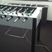

Hey! Ich bin Niels Döring,
Freelance Web Developer & Technischer Projektmanager aus Frankfurt.
Ich bin 30 Jahre alt, habe Medieninformatik studiert und die vergangenen 5 Jahre für razorfish,
SinnerSchrader und Planon Software gearbeitet.
Als Application Developer & IT-Consultant war ich an den unterschiedlichsten Back- & Frontend Projekten beteiligt.
Skills
ASP.NET MVC,
C#,
CSS3,
Facebook API,
HTML5,
JavaScript,
Looping Louie,
Mobile,
(My)SQL,
PHP,
Sass,
Scrum,
(Technisches) Projektmanagement,
VBA,
Wordpress,
Zend Framework
Projekte
Kunde
3deluxe
Skills
CSS, HTML, JavaScript, jQuery, Knockout.js, PHP, Wordpress
Beschreibung
3deluxe ist eine deutsche Designagentur, die international auf den Feldern der Architektur, Innenarchitektur, Grafik- und Mediendesign tätig ist. Hauptsitz ist Wiesbaden, Niederlassungen existieren in Hamburg und Shanghai (China).
Umsetzung der neuen Webseite in Zusammenarbeit mit Martin Anderle. Dieses Projekt läuft momentan noch.
Bilder
Folgen nach Projektende
⇧
⇧
Kunde
BASE
Skills
CSS, Facebook API, HTML, JavaScript, MySQL, PHP, Technisches Projekmanagement, Wordpress
Beschreibung
Bei den Mobilfunkexperten handelt es sich um eine "Kunden helfen Kunden" Plattform von BASE. Ich war an der technischen Umsetzung in allen Bereichen (Backend, Frontend, Technisches Projektmanagement) beteiligt und auch für die Integration einer Wordpress-Installation (inkl. Entwicklung eigener Plugins) und die Realisierung einer passenden Facebook-Applikation zuständig.
Bilder
⇧
⇧
Kunde
Sinnerschrader
Skills
Arduino, node.js, Technisches Projekmanagement
Beschreibung
Lichtschranken registrieren sobald ein Tor geschossen wurde und senden dieses Signal an ein Arduino-Board an der Unterseite des Tisches. Dieses wiederum informiert den zugehörigen Server, welcher dann die Daten mit Hilfe einer Software aufbereitet und wieder ausgibt. So wird es möglich, dass der aktuelle Stand einer Partie auf einem iPad sichtbar wird und umfangreiche Statistiken abgerufen werden können.
Erfunden wurde der Tisch von SinnerSchrader Hamburg, für die Umsetzung im Frankfurter Büro war ich verantwortlich.
Bilder

Impressum
Verantwortlich für den Inhalt dieser Seiten
Niels Döring
Melsunger Str. 4
60389 Frankfurt
USt-IdNr. DE287398578
Telefon: 77390755 2510
Mail: moc.kooltuo@gnireod.slein
Haftungshinweis
Trotz sorgfältiger inhaltlicher Kontrolle übernehmen wir keine Haftung für die Inhalte externer Links. Für den Inhalt der verlinkten Seiten sind ausschließlich deren Betreiber verantwortlich.
Urheberrecht
Die Inhalte auf dieser Seite unterliegen dem deutschen Urheberrecht. Eine Weiterverbreitung der Inhalte darf nur mit der Zustimmung des Autors erfolgen.
Datenschutz
Diese Seite verwendet Google Analytics, einen Webanalysedienst der Google Inc. Dadurch wird ihre anonymisierte IP-Adresse an einen Server in der USA gesendet und dort gespeichert.
Im Auftrag des Betreibers dieser Website verwendet Google diese Daten um Reports über die Nutzung dieser Webseite zu erstellen. Zudem wird ein Cookie erzeugt, anhand dessen
Google feststellen kann, ob Sie diese Seite wiederholt besuchen. Sie können die Speicherung der Cookies durch eine Einstellung in ihrem Browser verhindern.
{kind=link}
{kind=link}
{kind=link}
{kind=link}
{kind=link}
{kind=link}
{kind=link}